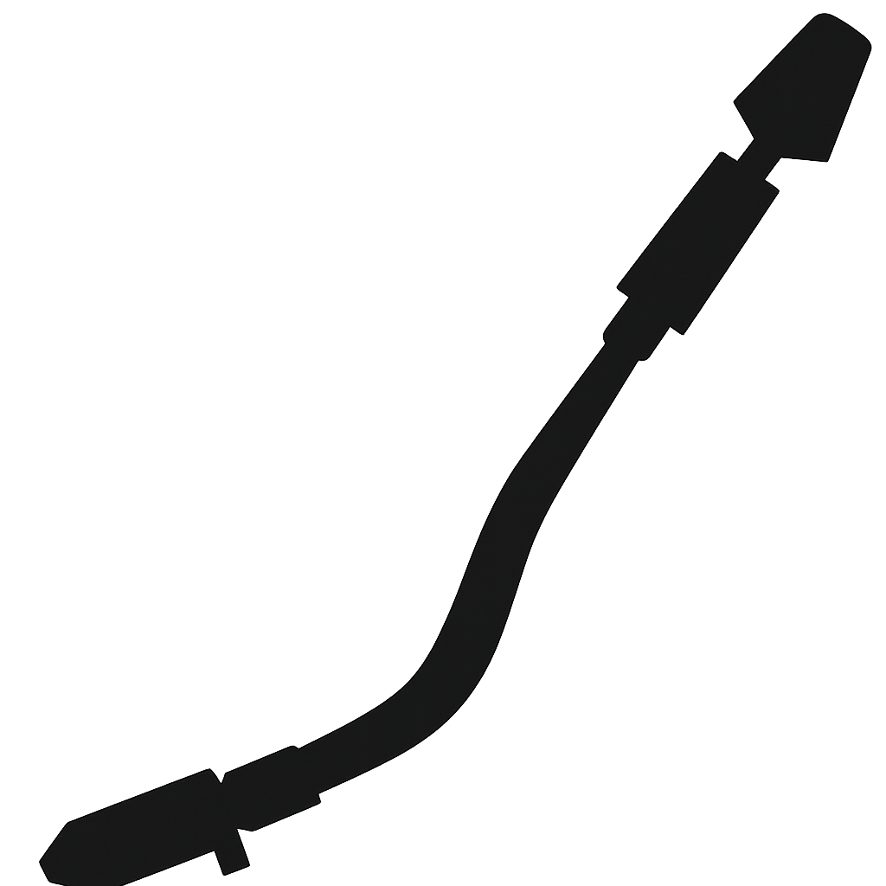
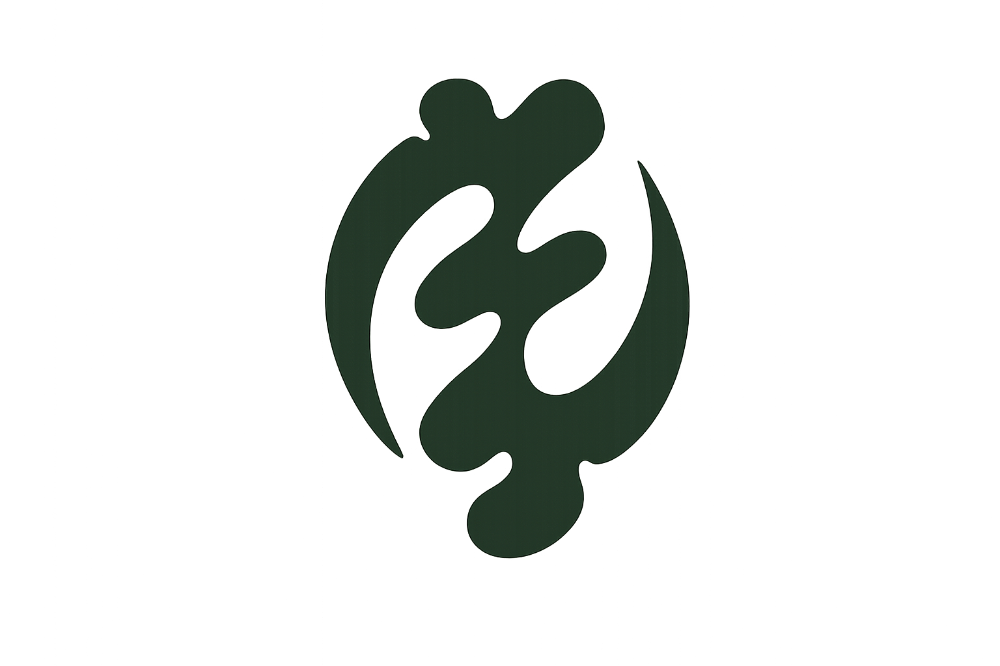
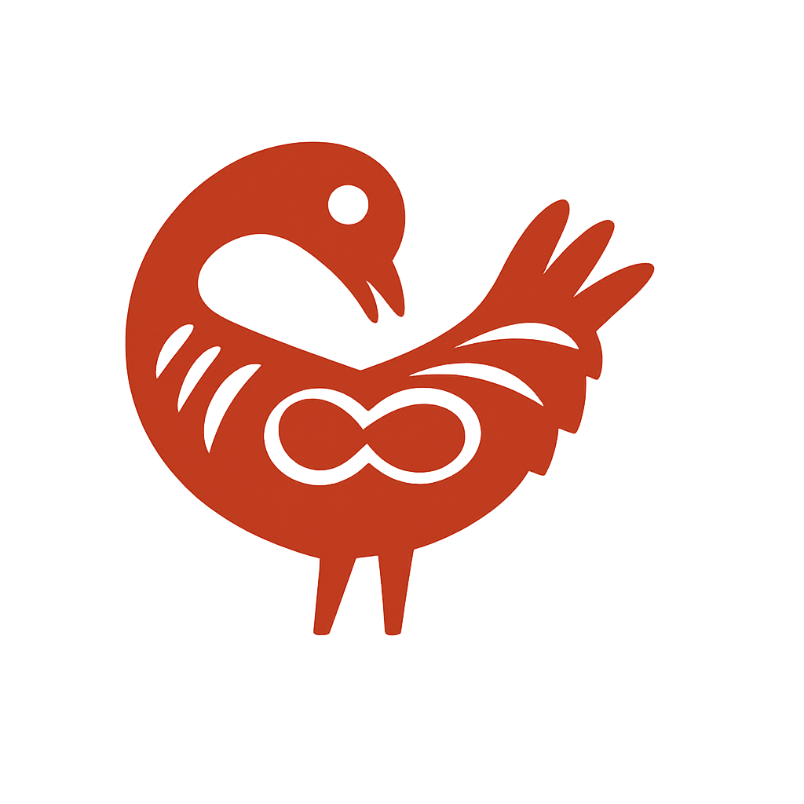

Selected Work


I’m interested in designing intuitive, user-centered digital experiences that balance visual clarity with functionality. I enjoy wireframing, prototyping, and thinking through how users move through an interface. I’m especially drawn to projects that center accessibility, community, and thoughtful interaction design.
I’m currently building my skills in front-end development using HTML, CSS, and JavaScript. I enjoy bringing designs to life through code and learning how layout, responsiveness, and interaction work across devices.
I’m interested in how visual systems, messaging, and digital presence work together to shape a brand. Through coursework and projects, I’ve explored brand refreshes, campaign strategy, and the relationship between design and storytelling.
I care deeply about inclusive and ethical design practices. I’m interested in how technology and design can reflect diverse identities, address bias, and create more equitable user experiences.
Selected Work

About Me
I’m Isabella Boateng, a CS + Design student interested in building digital experiences that connect creativity, culture, and technology. My work explores web development, UI/UX, branding, and human-centered design.
Learn more about me →Adinkra & Identity
Adinkra symbols are part of my Ghanaian heritage and influence how I think about identity, meaning, and storytelling in design.
Faith, resilience, and purpose.
In Ghanaian culture, Gye Nyame means “except for God” and represents faith, divine power, and trust. For me, it connects to staying grounded in purpose while building work that reflects identity and meaning.

Learning from the past to move forward.
Sankofa means “go back and get it.” It represents learning from the past in order to move forward. I connect it to honoring my Ghanaian roots while using design and technology to create something new.
Strength, humility, and balance.
Dwennimmen, or “ram’s horns,” symbolizes strength and humility. I connect it to leading with confidence while staying open to learning, collaboration, and growth.